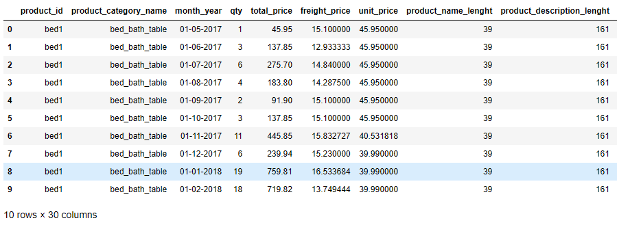
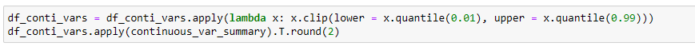
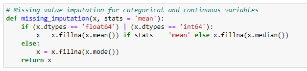
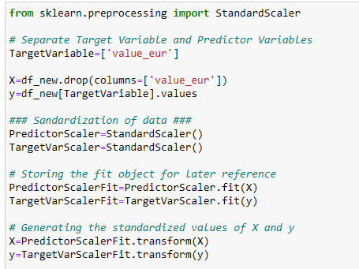
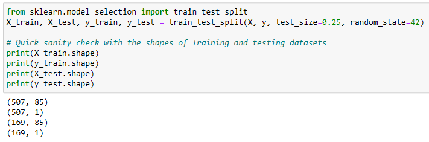
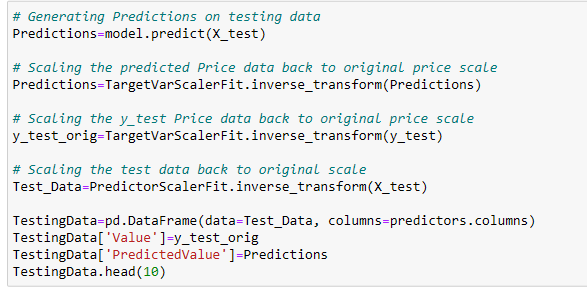

Retail Price Optimization
Introduction
Price optimization is using historical data to identify the most appropriate price of a product or a service that maximizes the company’s profitability. There are numerous factors like demography, operating costs, survey data, etc that play a role in efficient pricing, it also depends on the nature of businesses and the product that is served.
Dataset
Data Analysis
Data analysis refers to the process of manipulating raw data to uncover useful insights and draw conclusions. In this project dataset in taken from recognised platform named Kaggle, 'retail_price.csv”.
On describing dataset it shows:
Cleaning of Dataset:
Outlier Treatment
Missing Value Treatment
Categorical Value Treatment
An outlier is an extremely high or extremely low data point relative to the nearest data point and the rest of the neighbouring.
Outliers are treated by using quantile() method of python.

Occur when no data value is stored for the variable in an observation.Here NA vales are treated by the mean of the input feature or median of input features. 
categorical data has values and observations which can be sorted into categories or groups like Gender.
Here Categorical values are treated using dummy variables.

Scaling of Dataset
Scaling of features is an essential step in modelling the algorithms with the datsets. The data obtained contains features of various dimensions and scales altogether. Different scales of the data features affect the modeling of a dataset adversely. Here StandardScalar() function is used for scaling. 
Training and Testing of Model
Training data is the subset of original data that is used to train the machine learning model, whereas testing data is used to check the accuracy of the model. The training dataset is generally larger in size compared to the testing dataset.
Libraries used in the code
NumPy
Pandas
Sklearn
Seaborn
Building a Artificial Neural Network
Neural Network is a type of machine learning process, called deep learning, that uses interconnected nodes or neurons in a layered structure that resembles the human brain.
In our Neural Network there is a input layer with 5 nodes with RELU activation function, an hidden layer with 5 nodes with TANH activation function and a output layer.
Our Neural Network have an Input layer of 4 nodes and a single node output layer. Activation function on input layer used is ReLU. Mean Squared Error loss function is used.
What are RELU, MSE know here --
Activation functions
The common problem in most of the learning is how the gradient flows in the network because in some cases gradient is sharp and in some it is slow or even zero. This creates problem in optimal selection techniques for learning parameters. The Activation functions are designed to overcome issues of gradient like vanishing and exploring of gradient. Activation functions are defined as a function used in ANN to compute the weighted sum of input and biases and is use to decide whether a neuron will get activated or not. It manipulates the input via. some gradient processes like gradient descent and then produce output for ANN. These activation functions are termed as transfer function.
ReLU
A rectified linear unit (ReLU) is an activation function that introduces the property of non-linearity to a deep learning model and solves the vanishing gradients issue. It interprets the positive part of its argument. It is one of the most popular activation functions in deep learning. ReLU performs threshold operation to each input element where value is less than 0 are set to 0. The functional form of ReLU is :

The function rectifies the value of the input less than 0 therby forcing them zero and elimination vanishing gradient problem. It has limitation of overfitting that is overcome by dropout technique.
Mean Squared Error Loss Function
The Mean Squared Error measures how close a regression line is to a set of data points. It is a risk function corresponding to the expected value of the squared error loss. Mean square error is calculated by taking the average, specifically the mean, of errors squared from data as it relates to a function
Predictions
Conclusions of the results
I studied and implemented Artificial Neural Network on a retail store dataset and NN was found to be impressive to generate results. The table given below shows the difference between actual and predicted values.
The prediction of model depends on various factor and parameters.
Link of the Notebook
mohdzain98/Retail_price_optimization(:github.com) mohdzain98/Retail_price_optimization(:github.com)References
- Github Repository
- Kaggle for dataset
- Sklearn official website
© 2022 Mohd Zain
Powered by Bootstrap
Published on : 07 Sep,2022
Updated on : 01 sep,2023 Version:1.7
Updated on : 01 sep,2023 Version:1.7